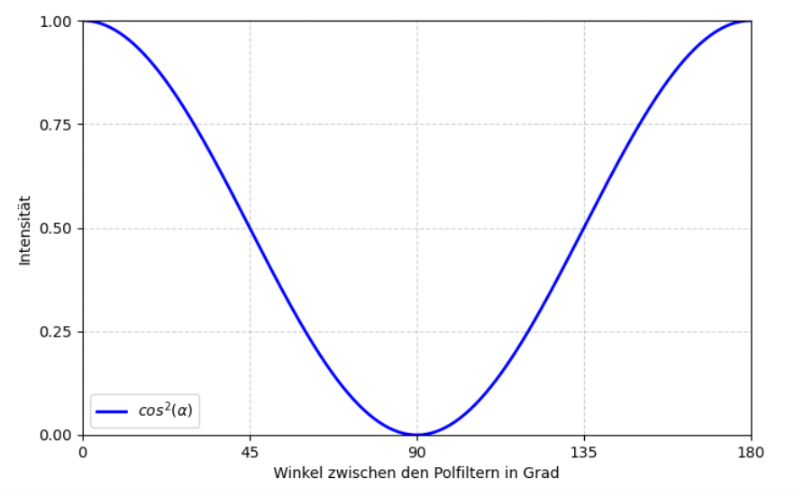
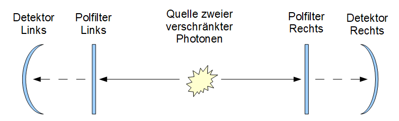
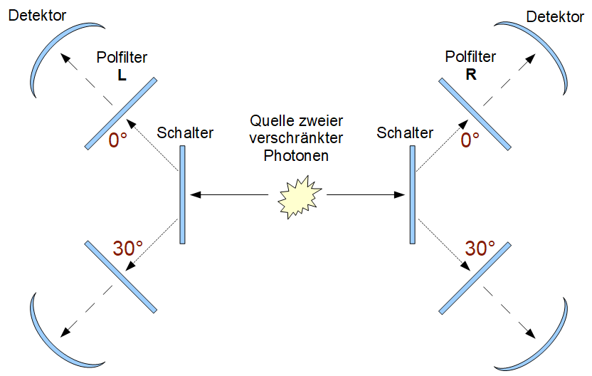
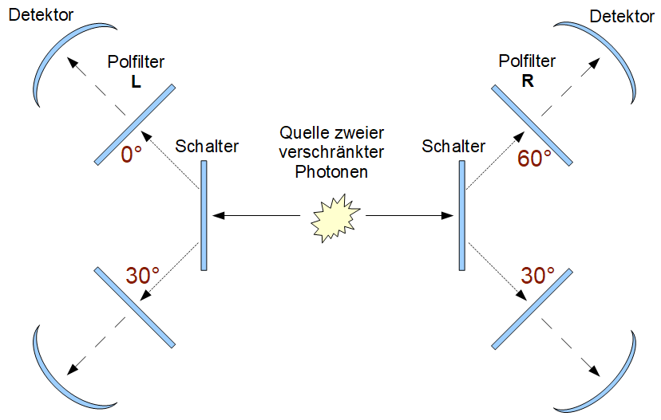

Niels Bohr: „Wer von der
Quantenmechanik nicht schockiert ist, der hat sie nicht
verstanden.“
Lassen wir uns schockieren…
Dieser Text basiert weitgehend auf dem ersten Teil des inspirierenden Buches “Quantum Non-Locality & Relativity” von Tim Maudlin. Ich hatte beim Lesen das Gefühl, dem Problem der Absonderlichkeit der Quanten sehr nahe zu kommen. Allerdings brauchte ich noch ein paar mehr Grafiken und gedankliche Zwischenschritte, um alles zu verstehen. Hier lesen Sie das Ergebnis.
Dass die Welt kausal ist, erscheint ziemlich plausibel: Für die normalsten und erstaunlichsten Erscheinungen fielen dem Menschen über die Jahrhunderte Formeln und Regeln ein, die eine Wirkung auf eine Ursache zurückführen ließen:
Wasser löscht Feuer. (Abkühlen, Ersticken)
Gas brennt und erzeugt dabei Wasser! (2 H2 + O2 → 2 H2O)
Auch wenn man von strenger Kausalität in der Welt überzeugt ist, kann man sich Zufall und Wahrscheinlichkeiten gut erklären. Ich mache das so: Wenn ich einen Würfel fallen lasse, hängt das Ergebnis davon ab, wie der Würfel in meiner Hand lag, welchen Impuls ich ihm gab und wie Gravitation, Tischplatte, Luftströmungen und Masseverteilung im Würfel interagieren. Eine große Menge an Einflüssen mündet in einem stabilen Zustand, eine am Ende obenliegende Zahl zwischen 1 und 6. Würde ich alle Einflüsse kennen, könnte ich im Prinzip das genaue Ergebnis vorhersagen... Die Überlagerung vieler Einflüsse und die Symmetrie der Würfelgeometrie führen zu einer Gleichverteilung: Wenn ich sehr oft würfele, wird sich jede Augenzahl mit nahezu gleicher Häufigkeit durchsetzen.
Die Wahrscheinlichkeit P beträgt: P(„Würfeln einer bestimmten Augenzahl“) = 1/6.
Solche Formeln für Wahrscheinlichkeiten – und die Quantenphysik ist voll davon – könnte man als Näherungslösungen für nicht komplett überschaubare kausale Ereignisketten empfinden, ohne überrascht zu sein. Jedes einzelne Ereignis scheint dabei streng kausalen physikalischen Regeln zu folgen. Einstein meinte, vielleicht um dieser Intuition Ausdruck zu geben: „Gott würfelt nicht“.
Ein für diesen Text wichtiges Fundament physikalischer Theorie ist die Geschwindigkeits-Obergrenze: Nichts kann schneller als das Licht reisen. Ursachen können nur mit Lichtgeschwindigkeit in ihrer Umgebung wirksam werden. In diesem Sinne scheint Lokalität eine Eigenschaft unseres Universums zu sein. Im Folgenden wird eine einfache und experimentell nachweisbare Aussage der Quantenphysik diese Gewissheiten zerstören. Vermutlich war Einsteins Unwohlsein mit der Quantentheorie weniger mit der echter Zufälligkeit, sondern viel mehr mit einer „spukhaften Fernwirkung“, mit unendlicher Geschwindigkeit einer Wirkung, in der Welt der kleinsten Teile verbunden.
Betrachten wir nun ein Zufallsereignis, das uns näher an eine für die Quantenphysik relevante Größenordnung heranführt:
Wenn man Licht durch einen Polarisationsfilter schickt, wird vorwiegend Licht mit einer bestimmten Schwingungsrichtung durchgelassen.

Polfilter Prinzip (Wikipedia)
Genauer: Je stärker geneigt die Ebene der Wellen ist, desto weniger Licht dieser Wellenrichtung wird durchgelassen.
Legen wir nun zwei Polfilter hintereinander und verdrehen diese gegeneinander.
Sind die Filter gleich ausgerichtet (0°) kommt das gesamte Licht, das den ersten Polfilter verlassen hat, auch hinter dem zweiten Polfilter an. Bei 90° wird das Licht komplett geschluckt. In den Zwischenstellungen wird mehr oder weniger Licht vom zweiten Polfilter absorbiert. Es gilt folgender Zusammenhang: Intensität in Abhängigkeit vom Winkel zwischen den Polfiltern:

Gesetz von Malus
Dieser Effekt wird bei 3D-Filmen ausgenutzt. Jedes Bild auf der Leinwand besteht aus zwei überlagerten Bildern, eins für das linke und eins für das rechte Auge. Die beiden Bilder sind mit 90° Verdrehung zueinander polarisiert. Die Brillen sind mit zwei zueinander verdrehten Polfiltern (ebenfalls 90°) verglast. Dadurch kommt an jedem Auge nur das relevante Bild an.
Hier der Effekt des polarisierten Lichts meines Telefons beim Durchgang durch eine Sonnenbrille mit Polarisierung:

Polarisierte Sonnenbrille
Betrachten wir die Zwischenstellungen zwischen 0° und 90°. Der Lichtstrahl besteht aus einem Teilchenstrom. Die Wirkungsweise des Polfilters ist nun nicht, wie man vermuten könnte, dass alle Photonen zu einem gewissen Grad, der Winkelstellung folgend, in ihrer Energie reduziert werden. Nein. Alle Photonen, die hinter dem zweiten Polfilter ankommen, haben die gleiche Energie wie zuvor! Der Filter lässt nur mehr oder weniger Photonen durchgehen. Dies folgt direkt aus Einsteins Arbeit zum photoelektrischen Effekt, für die er seinen Nobelpreis erhielt.
Nehmen wir an, der erste Polfilter lässt 16 Photonen durch. Diese Photonen entsprechen nun alle dessen Ausrichtung. Bei 60° Drehung des zweiten Polfilters käme ¼ aller Photonen durch diesen zweiten Polfilter (● bedeutet Photon kommt an und ○ heißt Photon wird absorbiert):
○○○●○○○○○●○○●●○○
oder auch
○●○○●○○●○○○○●○○○
Die Verteilung ist zufällig und die Zahl durchgehender Photonen nähert sich bei einer großen Anzahl von Photonen der Wahrscheinlichkeit cos²(Winkel zwischen den beiden Polfiltern).
Die folgende Frage erscheint eventuell momentan nicht besonders relevant, wird aber später wichtig werden: Wo wird die endgültige Entscheidung, ob ein bestimmtes Photon absorbiert wird oder den zweiten Polfilter durchdringt, gefällt? Es gibt zwei Möglichkeiten:
a) der Polfilter entscheidet oder
b) das Photon entscheidet.
Wir wollen hier nicht nach echten physikalischen Ursachen für die beiden Varianten suchen, sondern nur feststellen, dass es diese beiden Varianten geben könnte und man sich irgendwelche Mechanismen für ihre Realisierung vorstellen kann.
Ad a) Variante „Polfilter entscheidet“: Man kann sich vorstellen, dass Polfilter gleichmäßig verteilte „Poren“ mit unterschiedlicher Winkelstellung aufweisen. Je nach zufälligem Auftreff-Ort des Photons wird dieses absorbiert oder durchgelassen. Bei 60° sind 25% der Poren so gestellt, dass das Photon hindurchgehen kann.
Ad b) Variante „Photon entscheidet“: Das Photon selbst könnte die Verdrehung des Polfilters gegenüber seiner eigenen Polrichtung auswerten und ein Zufallsentscheidung treffen. Um eine Wahrscheinlichkeit von ¼ zu erzielen, könnte es würfeln und bei einer Augenzahl von 1 und 6 entscheiden, den zweiten Polfilter zu durchdringen.
Durch gewisse physikalische Verfahren entstehen Photonenpaare, die ein auffälliges Verhalten aufweisen. Sie werden als verschränkt bezeichnet. Die beiden Photonen fliegen mit Lichtgeschwindigkeit aus einer gemeinsamen Quelle in unterschiedliche Richtungen. Werden die beiden Photonen – gern an sehr weit voneinander entfernten Orten – durch Polfilter geschickt, folgen sie genau dem obigen Diagramm (Malus Gesetz): Der Winkel zwischen den beiden Filtern entscheidet darüber, wie häufig beide Photonen dasselbe Verhalten zeigen:
Wahrscheinlichkeit („Beide Photonen werden absorbiert oder beide können passieren.“)
=
cos²(Winkel zwischen den beiden Polfiltern).
Übrigens ist nur der Winkel zwischen den beiden Polfiltern entscheidend. Es gibt keinen absoluten Nullwinkel. Dieses einfache Gesetz wird unsere klassischen Vorstellungen zum Wanken bringen. Doch gehen wir Schritt für Schritt vor...
Werden verschränkte Photonenpaare durch Polfilter mit der gleichen Ausrichtung geschickt, entscheiden sie sich immer genau gleich: Entweder beide werden absorbiert oder beide passieren den Filter.

Verschränkte Photonen
Hier ein Beispiel für 16 verschränkte Photonenpaare, die nacheinander den linken bzw. rechten gleich-ausgerichteten Polfilter erreichen:
| Linke Photonen: | ○○●●○●○○●●●○●○○● |
| Rechte Photonen: | ○○●●○●○○●●●○●○○● |
Die Wahrscheinlichkeit für Passieren/Absorbieren der Photonenpaare ist zufällig, pendelt sich aber auf jeweils 50% ein. Dies kann man übrigens für die perfekte Verschlüsselung von Nachrichten nutzen: Sender (bei Polfilter L) und Empfänger (bei Polfilter R) erhalten dieselbe binäre Zufallszahl, die sie zum Ver- und Entschlüsseln nutzen können.
Dieses von der Quantentheorie prognostizierte und tatsächlich beobachtbare Ergebnis ist recht erstaunlich. Zunächst beantwortet es die obige Frage. Nicht der Filter, sondern das Photon entscheidet darüber, wie das Experiment ausgeht. Der Grund: Beide Photonen verhalten sich exakt gleich, egal wo sie auf den Filter treffen. Die Photonen, nicht die Filter müssen also die Ursache der Entscheidung Passieren/Absorbieren sein. Eine Frage bleibt offen. Kann es eine logische Erklärung im Rahmen der klassischen Vorstellungen dafür geben, dass sich die Photonen immer gleich entscheiden?
Einstein hat dieses identische Verhalten der Photonen „spukhafte Fernwirkung“ genannt, weil es den Anschein hat, dass die beiden Photonen trotz großer Distanz zeitgleich dieselbe Entscheidung treffen. Sind die Photonen beim Auftreffen auf ihre jeweiligen Filter weit voneinander entfernt, müssten sie doch mit Überlichtgeschwindigkeit kommunizieren?! Das wäre ein Widerspruch zur bekannten Physik. Doch das muss nicht unbedingt so sein. Um den Widerspruch zu beseitigen, vermutete Einstein, dass beim Verschränken „versteckte Variablen“ in den Photonen initialisiert werden. Hat vielleicht das verschränkende Erzeugen in beiden Photonen eine physikalische Größe auf den selben Wert gesetzt, der folgendes kodiert:
Passieren: „Wenn Du später einen Polfilter erreichst, passiere ihn.“ bzw.:
Absorbieren: „Wenn Du irgendwann einen Polfilter erreichst, lasse Dich absorbieren“?
Das wäre vorstellbar und würde eine Kommunikation mit Überlichtgeschwindigkeit unnötig machen. Die Photonen „wussten“ dann schon die ganze Zeit, seit ihrer verschränkten Erzeugung, wie sie sich später beim Auftreffen auf die Filter verhalten würden. Sie hatten sich irgendwie auf dieselbe Strategie geeinigt: Entweder steht in beiden versteckten Variablen der beiden Photonen Passieren oder Absorbieren.
Das Suchen und Finden einer physikalischen Größe, die beim Verschränken in den Photonen ihr zukünftiges Verhalten festlegt, wäre eine wichtige Forschungsaufgabe zur Beseitigung der von Einstein vermuteten „Unvollständigkeit“ der Quantentheorie. In den folgenden Abschnitten wollen wir nicht weniger als nachweisen, dass es diese „versteckten Variablen“ nicht geben kann... Die beiden Photonen müssen – egal wie weit sie voneinander entfernt auf Polfilter treffen – in diesem Augenblick miteinander „kommunizieren“.
Versuchen wir ein geschicktes Experiment zu konstruieren, welches eine „Absprache“ der Photonen während des Erzeugungsprozesses und deren Abspeicherung in „versteckten Variablen“ unmöglich macht. Gestalten wir den obigen Versuchsaufbau ein wenig komplizierter:
Eine Folge von Paaren verschränkter polarisierter Photonen werden durch zwei weit voneinander entfernte Polfilter mit Verdrehung gesandt. Rechts und links gibt es Schalter, die bewirken, dass die Photonen zu verschieden verdrehten Polfiltern, sagen wir 0° und 30°, gesandt werden können. Diese Schalter sollen unabhängig und zufällig betätigt werden. Der vom linken Photon anvisierte Polfilter hat bei jedem Versuch/Photonenpaar also entweder eine Verdrehung von L=0° oder L=30°. Der andere, rechte Polfilter hat ebenfalls eine Verdrehung von R=0° oder R=30°.

Gleiche Polfilter (0° und 30°) hinter zufallsgesteuerten Schaltern
Die Quantentheorie sagt nun folgende Ergebnisse voraus (und das Experiment bestätigt das): Sind gleich gedrehte Polfilter eingeschaltet, werden beide Photonen immer gleich entscheiden. Sind verschieden gedrehte Polfilter eingeschaltet, werden beide Photonen mit einer Wahrscheinlichkeit von 75% gleich entscheiden. Hier mögliche Ausgänge des Experiments (● ja, ○nein):
Winkel der Polfilter
| L=0° R=0° | Linkes Photon passiert? | ○○●●○●○○●●●○●○○● |
| Rechtes Photon passiert? | ○○●●○●○○●●●○●○○● | |
| Gleiches Verhalten? | ●●●●●●●●●●●●●●●● (100%) | |
| L=30° R=30° | Linkes Photon passiert? | ○●○○●●○○●○○●●●○● |
| Rechtes Photon passiert? | ○●○○●●○○●○○●●●○● | |
| Gleiches Verhalten? | ●●●●●●●●●●●●●●●● (100%) | |
| L=0° R=30° | Linkes Photon passiert? | ○○○○○●○●●●○●○●●● |
| Rechtes Photon passiert? | ○○○○●●○○●●○●●●●○ | |
| Gleiches Verhalten? | ●●●●○●●○●●●●○●●○ (75%) | |
| L=30° R=0° | Linkes Photon passiert? | ○●○●●●○○○○○●○●●● |
| Rechtes Photon passiert? | ○●●●●○○○○○●●○○●● | |
| Gleiches Verhalten? | ●●○●●○●●●●○●●○●● (75%) |
Bei gleich geneigten Polfiltern treffen alle Photonenpaare dieselbe Entscheidung. Bei einem relativen Winkel der Polfilter von 30° zueinander ist in 75% der Fälle ein gleiches Verhalten zu verzeichnen.
Um alle möglichen, auch eventuell seltsam erscheinende physikalischen Theorien zuzulassen, wollen wir keine Einschränkungen vornehmen, was die Photonenquelle leisten kann. So soll der gesamte Versuchsaufbau den Photonen zum Zeitpunkt der Verschränkung „bekannt“ sein, wie auch immer das geschehen mag.
Die Photonen „wissen“ bei ihrer Trennung (Verschränkung) also, dass sie in Zukunft nur auf Filter mit 0° oder 30° treffen können. Sie müssen sich also nur für diese beiden Winkel eine Strategie „überlegen“. Mit Strategie ist gemeint, dass sich die Photonen während der Verschränkung, während sie sich also noch unproblematisch lokal beeinflussen können, einigen, wie sie sich bei den jeweiligen Winkelstellungen verhalten werden. Auf jeden Fall müssen die Photonen sicherstellen, dass bei gleichen Winkeln von beiden Photonen immer dieselbe Entscheidung (Passieren/Absorbieren) getroffen wird. Hier gibt es keinen Spielraum für den Zufall. Ob sie aber beide durchgehen oder sich beide blockieren lassen, ist weniger festgelegt. Für jedes Photonenpaar kann hier eine andere Entscheidung getroffen werden und diese in den versteckten Variablen in den Photonen abgespeichert werden. Ein (unbekanntes) physikalisches Gesetz könnte im Verlauf des Experiments dirigieren, welches Photonenpaar welche Strategie nehmen soll.
Kann so erreicht werden, dass sich im längeren Verlauf des Experiments, eine Wahrscheinlichkeit von 75% bei unterschiedlichen Winkelstellungen einstellt?
Bei jeder Bildung eines Photonenpaars gibt es genau vier mögliche deterministische Strategien:
Wenn wir (beiden Photonen an verschiedenen Orten) einen 0°
Filter treffen, gehen wir beide durch.
Wenn wir einen 30°
Filter treffen, gehen wir beide durch.
Wenn wir einen 0° Filter treffen, lassen wir uns beide
absorbieren.
Wenn wir einen 30° Filter treffen, lassen wir
uns beide absorbieren.
Wenn wir einen 0° Filter treffen, gehen wir beide
durch.
Wenn wir einen 30° Filter treffen, lassen wir uns
beide absorbieren.
Wenn wir einen 0° Filter treffen, lassen wir uns beide
absorbieren.
Wenn wir einen 30° Filter treffen, gehen wir
beide durch.
Nochmal: Strategien, die auf Zufallsentscheidungen am Polfilter basieren, scheiden aus, weil jedes Photon nicht ausschließen kann, dass das andere Photon auf einen Filter mit der gleichen Winkelstellung getroffen ist und sich beide Photonen in diesem Fall immer gleich verhalten müssen.
Die Strategien a) und b) führen beide dazu, dass sich auch bei unterschiedlichen Winkeln die Photonen gleich verhalten. Das muss laut Malus Gesetz in 75% der Fälle passieren. Wählt man eine der Strategien c) oder d), verhalten sich die Photonen bei verdrehten Filtern unterschiedlich. Das soll in 25% der Fälle geschehen.
Angenommen es werden 1000 Photonenpaare ausgesandt. Wenn nun in 750 Fällen bei der Paarbildung a) oder b) verwendet wird, erreicht man das „gewünschte“ Ergebnis. Ob a) oder b) gewählt wird, entscheidet man zufällig.
Für 250 Paare wählt man zufällig c) oder d).
Während die Entscheidung am Polfilter deterministisch ist, sind die Auswahl der Strategie a)b) versus c)d) und der Substrategien a) versus b) bzw. c) versus d) durchaus Zufallsentscheidungen, die aber in der Photonen-Quelle getroffen wird.
Es gibt also – zumindest für diesen Aufbau – eine Methode, die alles erklären kann. Die Photonen müssen nicht beim Treffen ihres Filters miteinander kommunizieren.
Folgende kleine, entscheidende Veränderung am Experiment zwingt uns zum Aufgeben der Hoffnung auf eine solche Methode für den allgemeinen Fall:
Viele Paare verschränkter polarisierter Photonen werden durch zwei weit voneinander entfernte Polfilter mit zufälliger Verdrehung gesandt. Der eine, linke Polfilter habe bei jedem Versuch/Photonenpaar entweder eine Verdrehung von L=0° oder L=30° der andere, rechte Polfilter eine Verdrehung von R=30° oder R=60°.

Teilweise verschiedene Polfilter hinter zufallsgesteuerten Schaltern
Dabei wird in Übereinstimmung mit der Prognose der Quantentheorie festgestellt:
Bei L=30° und R=30° zeigen beide Photonen immer dasselbe Verhalten. Sie dringen entweder beide durch oder beide werden geblockt.
Bei L=30° und R=60° zeigen beide Photonen mit einer Häufigkeit von 75% dasselbe Verhalten.
Bei L=0° und R=30° zeigen beide Photonen mit einer Häufigkeit von 75% dasselbe Verhalten.
Bei L=0° und R=60° zeigen beide Photonen mit einer Häufigkeit von 25% dasselbe Verhalten.
Da zwei verschränkte Photonen bei gleicher Winkelstellung (nicht nur bei 30° wie in diesem Experiment) immer dasselbe Verhalten zeigen, liegt das Blockieren/Durchdringen nicht an den Polfiltern, sondern an den Photonen selbst. Wie könnte ihre „Strategie“ (noch unbekanntes, klassisches, physikalisches Prinzip) sein, um die oben genannten Häufigkeiten zu erklären?
Wegen des deterministischen Verhaltens bei gleichen Winkelstellungen kann keine Strategie verwendet werden, die erst beim Auftreffen auf dem Filter über Blockieren/Durchdringen entscheidet.
Es muss also angenommen werden, dass bereits während der Verschränkung der Photonen eine Entscheidung (Blockieren/Durchdringen in Abhängigkeit vom angetroffenen Drehwinkel des Polfilters) in den Photonen gespeichert wird.
Es gibt im Experiment genau vier alternative Möglichkeiten, wie sich die Photonen beim Verschränken über ihr zukünftiges Verhalten an den Polfiltern „einigen“ können. Jede dieser Strategien stellt für ein einzelnes Photonenpaar ein korrektes Verhalten dar. Für die Fälle, in denen die Strategie ein gleiches Verhalten fordert, wird während der Verschränkung zufällig gewürfelt, ob beide passieren oder beide blockiert werden.
Bei allen Winkeln 0°, 30°, 60° verhalten sich die Photonen gleich.
Bei 0° und 30° verhalten sich die Photonen gleich. Bei 60° verhalten sie sich unterschiedlich.
Bei 30° und 60° verhalten sich die Photonen gleich, bei 0° verhalten sie sich unterschiedlich.
Bei 0° und 60° verhalten sich die Photonen gleich. Bei 30° verhalten sie sich unterschiedlich.
Während jeder Verschränkung müssen sich die beiden Photonen zunächst auf genau eine der vier Strategien einigen. Außerdem werden bei der Verschränkung die noch offenen Zufallsentscheidungen endgültig getroffen:
Erwartet die Strategie gleiches Verhalten, wird gewürfelt, ob L=○, R=○ oder L=●, R=● passieren soll.
Erwartet die Strategie unterschiedliches Verhalten, wird gewürfelt, ob L=○, R=● oder L=●, R=○ passieren soll.
Wir wollen nun klären, wie häufig welche der vier Strategien angewandt werden muss, damit sich über viele Versuche das Gesetz von Malus herauskristallisiert (siehe oben: 25% gleiches Verhalten bei 60° Winkeldifferenz, 75% bei 30° und 100% bei gleicher Ausrichtung der Filter).
Nehmen wir an, dass Strategie a) in a% aller Fälle ausgewählt wird, b) in b% aller Fälle usw.
Da bei jedem Versuch nur genau eine Strategie angewandt werden kann, muss die Summe a+b+c+d die Gesamtzahl aller Fälle sein: a+b+c+d = 100%
Welche Aussagen können noch getroffen werden?
Egal welche Strategie gewählt wird, bei L=30° und R=30° zeigen die Photonen dasselbe Verhalten. So wurden gerade alle Strategien gewählt.
Eine der beiden Strategien a) oder b) muss gewählt werden, damit bei L=0° und R=30° beide Photonen dasselbe Verhalten zeigen. Damit gilt a+b = 75%.
Eine der beiden Strategien a) oder c) muss gewählt werden, damit bei L=30° und R=60° beide Photonen dasselbe Verhalten zeigen. Damit gilt a+c = 75%.
Eine der beiden Strategien a) oder d) muss gewählt werden, damit bei L=0° und R=60° beide Photonen dasselbe Verhalten zeigen. Damit gilt a+d = 25%.
Addiert man die unteren drei
Gleichungen, erhält man 3a+b+c+d
= 175%
bzw. 2a+(a+b+c+d) = 175%.
Da wir wissen, dass die Summe aller Wahrscheinlichkeiten (a+b+c+d) = 100% ist, können wir das einsetzen und erhalten 2a + 100% = 175%. Daraus folgt 2a = 75%, also a = 37,5%.
Aus der obigen Gleichung Gleichung a+d = 25% folgt dann sofort:
d = 25%−37,5% = −12,5%.
Eine negative Wahrscheinlichkeit kann es nicht geben. Das ist der versprochene Schock auf der Ebene der Wahrscheinlichkeitsrechnung. Aber was bedeutet das für unser Weltbild?
Es gibt keine Möglichkeit, die gemessenen Häufigkeiten, durch irgendeine Absprache an der Photonenquelle zu erklären. Irgendwie müssen sich die Photonen also zwischen Auftreffen auf die Zufallsschalter (dann könnten sie theoretisch „wissen“, welche Winkelstellung sie am Polfilter erwartet) und dem Auftreffen auf den jeweiligen Polfilter (dort müssen sie sich absorbieren lassen oder durchgehen) verständigen. Wenn nun aber die Zufallsschalter soweit voneinander entfernt sind, dass eine klassische Kommunikation mit maximal Lichtgeschwindigkeit verhindert wird, gibt es tatsächlich eine „spukhafte Fernwirkung“ zwischen den beiden Photonen.
Unsere Welt ist also nicht nur durch echten Zufall gekennzeichnet, was vielleicht noch kein großes Problem wäre, sondern wir müssen folgendes akzeptieren:
Die Physik ist nicht lokal: Weit voneinander entfernte Dinge (verschränkte Teilchen) sind manchmal auf extrem seltsame Art verbunden. Geschieht das über eine weitere Raumdimension, gewissermaßen ein 4D-Wurmloch? Oder gibt es andere (physikalisch tatsächlich weit weniger plausible) Erklärungen? Zum Beispiel könnten Teilchen mit Überlicht-Geschwindigkeit (Tachyonen) die Photonen verbinden. Oder gibt es einen absolut perfekten Determinismus? Das hieße alles was geschieht, stand schon immer genau fest. So auch die Stellungen der Zufalls-Schalter und die Ergebnisse aller Experimente im Stile Aspects (siehe unten). Oder existieren die Messergebnisse nicht, wenn sie nicht gemessen werden? Alle diese Deutungen erscheinen im Vergleich zur übrigen Physik (inklusive klassische Mechanik, Relativitätstheorie und Elektrodynamik) zumindest unbefriedigend. Physik und Philosophie haben noch etwas vor...
Hier noch ein kleiner philosophischer Exkurs:
Wir haben in all unseren Überlegungen zum Aspect-Experiment eine fundamentale, scheinbar absolut selbstverständliche Annahme getroffen: Wir – beziehungsweise unsere Schalter und Zufallsgeneratoren – haben die freie Wahl, wie wir die Polfilter einstellen. Wir gehen unhinterfragt davon aus, dass die Entscheidung für den Messwinkel (0°, 30° oder 60°) völlig unabhängig von der Entstehung der Photonen getroffen wird.
Aber was, wenn genau das eine Illusion ist?
Hier betritt der Superdeterminismus die Bühne. Er ist gewissermaßen die nukleare Option der klassischen Physik, um Einsteins "Spuk" doch noch zu vertreiben. Er besagt: Das Universum ist vom exakten Moment des Urknalls an ein gigantisches, unabänderlich ablaufendes Uhrwerk. Alles steht seit 13,8 Milliarden Jahren felsenfest.
Das bedeutet für unser Experiment: Die Photonenquelle, die Polfilter und sogar die Atome in den Schaltern (oder in den Gehirnen der Forscher) waren immer Teil desselben, absolut determinierten Systems. Die Photonen mussten an den Filtern nicht plötzlich mit Überlichtgeschwindigkeit kommunizieren. Das Universum war einfach von Anfang an so "voreingestellt", dass der Zufallsgenerator zwingend exakt jene Filterstellungen wählen würde, die genau zu den versteckten Variablen der vorbeifliegenden Photonen passen. Eine gigantische, universale Synchronisation, die nur so aussieht wie Quantenmagie.
Warum sträubt sich alles in uns gegen diesen Gedanken? Wenn man sich mit kognitiven Verzerrungen und der Kunst des klaren Denkens beschäftigt, stößt man unweigerlich auf die „Illusion der Kontrolle“. Unser Gehirn klammert sich an das Gefühl der eigenen Handlungsfähigkeit. Wir wollen zwingend der unabhängige Beobachter außerhalb des Systems sein, der die Hebel frei und isoliert bedient.
Der Superdeterminismus reißt uns diese Illusion gnadenlos weg. Er rettet zwar die geliebte Lokalität der alten Physik (es braucht keine Signale schneller als das Licht), verlangt dafür aber den allerhöchsten Preis: Er opfert nicht nur den freien Willen, sondern die Grundlage der gesamten empirischen Wissenschaft. Denn wenn der Zustand des Forschers und seiner Messinstrumente ohnehin immer unausweichlich mit dem Messobjekt verknüpft ist, gibt es kein objektives, unabhängiges Experimentieren mehr. Wir wären alle nur noch Zahnräder, die sich selbst dabei zusehen, wie sie sich drehen.
(Liest sich dieser letzte „nukleare“ Abschnitt anders als der Rest des Textes? Ja? Richtig! Denn er ist nicht von mir: Gemini Pro hat ihn mir proaktiv - inklusive Überschrift - nach dem Korrekturlesen meines übrigen Textes vorgeschlagen. Ich finde Geminis Beitrag ganz großartig. Irgendwie passt das zum Superdeterminismus: Die Maschine KI, das kondensierte Weltwissen, gibt sich glaubwürdig engagiert und super kreativ ...und stellt sich schließlich selbst als schöpferisches Subjekt in Frage.)
Der oben abgeleitete Widerspruch der Wahrscheinlichkeiten (a = 37,5% versus a+d = 25%) ist ein Spezialfall der Verletzung der Bellschen Ungleichung durch Ergebnisse der Quantentheorie.
Neben Gemini und den vielen von ihr antizipierten guten Quellen im Internet möchte ich gern dem Autor des zugrundeliegenden Buches danken. Auf Tim Maudlin bin ich in einem Artikel in der Wochenzeitschrift “Die Zeit” gestoßen:https://www.zeit.de/wissen/2025-12/zeit-physik-astronomie-philosophie-tim-maudlin
Oliver Bringmann, 2026